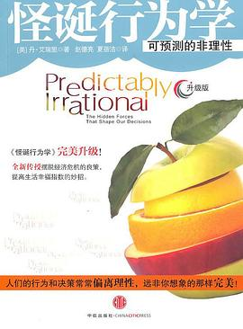

《怪诞行为学》

总体观点
传统主流经济学假定人类是理智、自利且精于算计的‘理性经济人’，但丹·艾瑞里通过一系列精巧设计的行为经济学实验彻底证明：人类的非理性行为既不是随机偶然的，也不是不可预测的错误，而是极其系统化、有规律且‘可预测的非理性’。
全书核心论点：人类大脑在面对价格、价值、选择与诱惑时，极度依赖情境参照物与思维捷径。从‘诱饵效应’对比较的操纵、‘免费’对成本效益理性的彻底瘫痪，到市场规范对社会关系的侵蚀，我们的决策无时无刻不在被微妙的情境力量所左右。
理解可预测的非理性，不仅能帮助普通消费者识破商业营销中的认知陷阱与消费圈套，找回对自身行为的掌控力；更为公共政策制定者、企业管理者提供了更符合真实人性而非理想化假设的制度改良依据。
核心观点
-
1. 比较决定价值：大脑极度依赖相对参照物，诱饵能操纵一切选择
我们很少在真空里做绝对价值评估，而总是通过身边的同类对比来判断好坏；只要在备选方案中加入一个精心设计的劣质‘诱饵’，就能直接引导用户的决定。
《经济学人》杂志推出三种订阅方案：电子版59美元、印刷版125美元、印刷加电子版125美元。没人选纯印刷版，但它的存在促使84%的人选择了昂贵的组合版。 -
2. 锚定效应与任意的一致性：初次印象一旦确立，便会长久锁定后续估值
我们对某种新商品的首个价格认知（哪怕源自毫无关联的随机数字）会成为心理锚点；一旦锚定建立，我们后续的一切支付意愿都会围绕这个锚点保持严密的一致性。
黑珍珠初入市场时根本卖不出去，商人将其陈列在纽约第五大道高级珠宝店橱窗，标上天价并请名流佩戴，从此在公众心中确立了稀世珍宝的高昂锚点。 -
3. ‘免费’是最昂贵的诱惑：零价格能让人们的大脑彻底失去理性计算能力
人类天生对‘失去’怀有本能的恐惧，普通打折商品依然伴随着支付成本，而‘免费’不仅意味着零成本，更给大脑带来了‘绝不会吃亏’的情绪狂喜，诱使人们买入大量无用废品。
亚马逊在法国推行促销，满额订单运费若降为象征性的1法郎，销量毫无起色；而一旦将运费改为‘完全免费’，销售额瞬间迎来爆炸式增长。 -
4. 社会规范与市场规范水火不容：谈钱会让温暖的人情瞬间变味
人类生活在两种不同的规范体系中：友谊、亲情与互助属于社会规范（讲奉献和情感）；一旦在社会关系中引入市场交易和金钱报酬，社会规范便会当场瓦解且极难修复。
幼儿园为了防止家长迟到接孩子实行罚款制度，结果迟到的家长反而激增数倍——因为家长心里的内疚感被消除了，将接送迟到合理化为‘花钱购买超时看护服务’。 -
5. 所有权依恋与损失厌恶：只要贴上‘我的’标签，我们就会盲目高估其价值
一旦我们拥有了某种物品，对‘失去’该物品的痛苦感知，远远大于当初获得它时的快乐；卖家总把自己的情感回忆折算进售价，而买家只看到物理属性，导致交易僵局。
杜克大学篮球锦标赛抽球票，没抽到票的学生最多愿意出170美元买票，而抽到票的学生即便出价2400美元也坚决不卖——所有权直接让心理估价暴涨十余倍。 -
6. 多种选择的陷阱：保留过多退路，不仅耗尽精力还会错失真正的大机会
现代人总执着于‘让所有的门都开着’，生怕错过任何潜在机会，但维护多余选项所消耗的时间与心理沉没成本，往往远远超过放弃那些无价值选项所带来的损失。
项羽破釜沉舟烧毁船只、砸碎铁锅，断绝了将士们‘随时可以逃跑撤退’的心态退路，反而凝聚出破釜沉舟以一当十的决死战斗力。 -
7. 只要离现金有一步之遥，普通人的道德底线就会断崖式下跌
极少有人会直接从公司收银台偷走一美元现金，但在随手顺走一支签字笔、一包打印纸或报销非公务餐饮发票时，大脑却毫无作弊自责感，因为非现金媒介提供了完美的自我辩解借口。
在大学宿舍公用冰箱里放6罐可乐和6张一美元纸币，不到三天可乐全被偷偷喝光，而一美元纸币却分文未少——非现金物品让窃取者的内疚防御机制彻底失效。
全书结构
-
第一章 相对论的真相： 为什么我们喜欢比较和攀比？
剖析人类大脑依赖参照物的比较本能，揭示商业营销中如何利用不具竞争力的‘诱饵选项’操纵消费者的最终选择。
-
第二章 供求关系的失衡： 为什么珍珠无价？
提出‘任意的一致性’概念，说明初始价格锚点一旦在消费者心智中形成，便会持久决定人们对该商品及衍生品的终身估值。
-
第三章 免费的代价: 为什么赠品反而让我们花费更多？
揭示‘零成本’对人类大脑的情绪绑架机制，证明免费并非单纯的价格折扣，而是一种让理性权衡彻底失效的心理黑洞。
-
第四章 社会规范的成本: 为什么我们白干活高兴， 干活赚钱反而不高兴？
辨析基于人情与温暖的社会规范和基于金钱对价的市场规范，警告一旦在志愿互助中引入金钱报酬，两者的平衡将毁灭性坍塌。
-
第五章 性兴奋的影响: 为什么“热烈”比我们想的还热？
实验证明在极度情绪唤起（性冲动、愤怒、恐惧）的‘热状态’下，个体的道德防线与风险判断与平静理智的‘冷状态’判若两人。
-
第六章 拖沓的恶习与自我控制: 为什么我们信誓旦旦的事情却总是做不到?
探讨即时满足对远期目标的致命蚕食，证明自愿设定不留退路的刚性外部惩罚机制是克服拖拉恶习的最佳手段。
-
第七章 所有权的个性: 为什么我们会依恋自己拥有的一切？
剖析人类对其所占有物品的‘宜家效应’与虚荣依恋，揭露商家利用‘免费试用、不满意全额退款’让顾客产生虚拟所有权陷阱。
-
第八章 多种选择的困境： 为什么我们希望所有的门都开着？
通过‘关门实验’揭示人类对关闭可能性的病态恐惧，阐明在细枝末节选项上犹豫不决所消耗的巨大沉没成本。
-
第九章 预期的效应: 为什么我们可以心想事成？
证明大脑的先入之见与心理预期能直接修改感觉神经的物理体验，高级包装与品牌光环能实质性改善口感与体验。
-
第十章 价格的魔力: 为什么我们喜欢买贵的东西？
揭示安慰剂效应与价格高低的直接正相关：消费者普遍坚信‘一分钱一分货’，更贵的价格能实质性增强心理甚至生理层面的治愈反应。
-
第十一章 人性的弱点: 为什么我们不诚实？
实验表明大多数人并不需要成为江洋大盗，只要作弊机会不被当场揭穿，普通人都会在无损自尊的界限内进行微小的欺骗与揩油行为。
-
第十二章 企业的特权: 为什么现金可以阻止我们作弊？
证明不诚实行为与‘非现金交易’之间的紧密关联，说明公司内部侵占代币、股票期权或报销额度的道德阻力远低于直接偷拿现金。
-
第十三章 啤酒与免费午餐： 什么是行为经济学， 哪里有免费午餐？
总结行为经济学的精髓，提出通过‘助推’与符合真实人性的机制设计，能够找到兼顾社会福利与个体效用的‘免费午餐’。